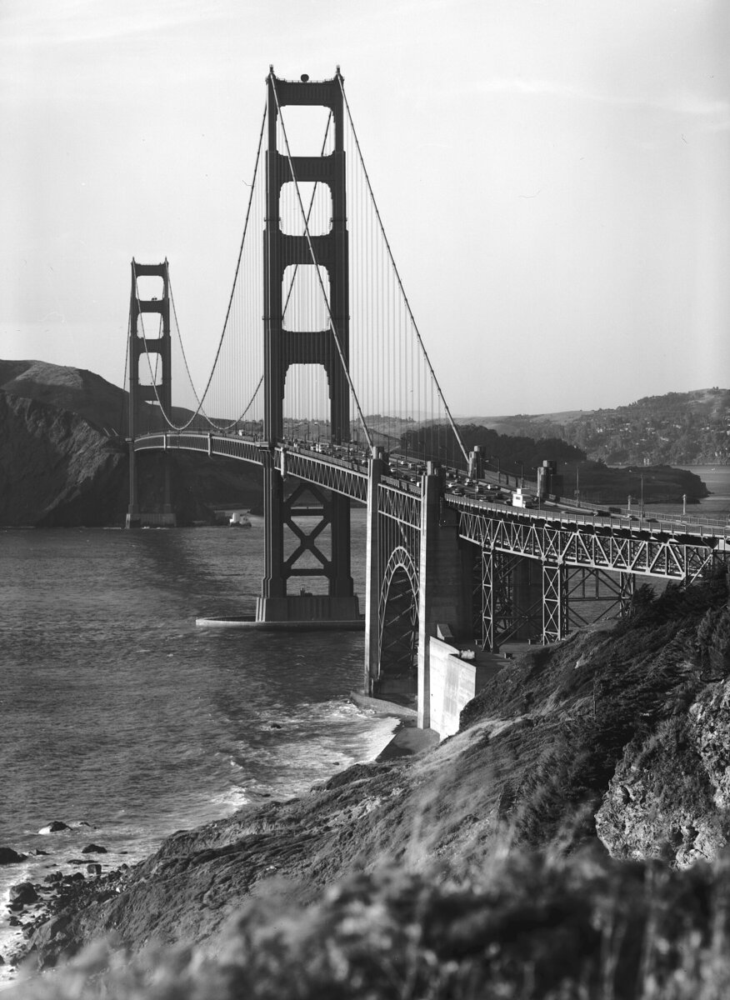
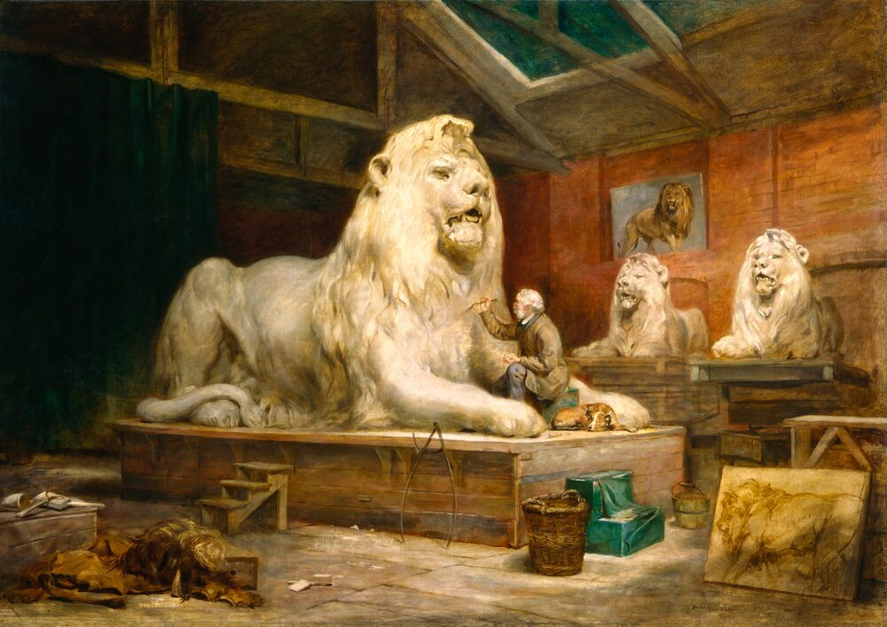

B1 · Travel & Places
The Golden Gate Bridge
What has stood across the mouth of San Francisco Bay since 1937, and what it has taken to keep it there.
Reading
Play the audio and follow along, then read it again on your own. Tap or hover over a highlighted word to see what it means.
The Golden Gate Bridge has stood across the entrance to San Francisco Bay since 1937, and in that time it has become one of the most recognizable structures in the world. It was a genuinely difficult thing to build. The strait it crosses is deep, the current runs hard through it twice a day, and the fog can close in within minutes. Plenty of engineers said at the time that a bridge there could not be built at all.
It was built anyway, as a suspension bridge, with a main span of about 1,280 meters. That made it the longest suspension span in the world when it opened, and it held that record for twenty-seven years. The two towers rise 227 meters above the water, and for a long time they were the tallest things in the city by a wide margin.

The color was an accident that stuck. The steel arrived coated in a reddish primer, and the consulting architect argued that the color suited the setting better than the gray or the black-and-yellow stripes that had been proposed. The shade is called International Orange, and it has turned out to have a practical advantage as well: it stays visible in fog, which matters on a strait where the fog is a daily fact for much of the summer.
Building it cost lives, though fewer than expected. A safety net was strung beneath the deck — an unusual precaution at the time, and an expensive one — and it caught nineteen men who would otherwise have fallen to their deaths. They called themselves the Halfway to Hell Club. Eleven workers died on the project, ten of them in a single accident near the end when a section of scaffolding fell through the net.
Since it opened, more than two billion vehicles have crossed the bridge. It has survived earthquakes, including the one in 1989 that brought down part of another bridge in the same bay, and it has since been strengthened further against the next one. It has been closed to traffic only a handful of times, almost always because of wind.
Keeping it standing is constant work. Crews have been maintaining and repainting the bridge continuously since it opened; the popular belief that they finish one end and immediately start again at the other is not quite accurate, but the ironworkers and painters have never really stopped. Salt air attacks steel, and a structure this size in this position would not last a decade without them.

What has not changed is what people do when they get there. They stop, they look, and they take a photograph in more or less the same spot, whether they have driven across it every working day for thirty years or have arrived from the other side of the world to see it once.
Key Vocabulary
- strait a narrow channel of water joining two larger areas of sea
- to close in to gather and reduce visibility, said of fog or cloud
- suspension bridge a bridge whose deck hangs from cables strung between towers
- span the distance a bridge crosses between two supports
- by a wide margin by a large amount
- primer a first coat of paint applied to protect metal before finishing
- shade a particular variety of a color
- scaffolding the temporary framework workers stand on during construction
- deck the flat surface of a bridge that carries the traffic
- to strengthen to make something better able to resist force
- ironworker a construction worker who builds with structural steel
- salt air sea air, which corrodes metal
The Golden Gate Bridge — B1 · Travel & Places · Renan the Teacher, English Language Academy · https://renangrossi.github.io/englishclasses/reading/b1/golden-gate-bridge-present-perfect.html
Interactive Exercises
Practice
Complete each exercise, then click Submit to see your score and an explanation for every answer.
Speaking & Writing
Discussion
There are no right answers here — use these to practice speaking, or write a short answer to each.
- Engineers said the bridge could not be built. What makes people attempt something after being told that?
- The safety net was unusual and expensive, and it saved nineteen lives. How should that cost be weighed when it is being decided?
- The color was an accident that turned out to work. Can you think of something in your own life that worked out the same way?
- Is there a structure in your country that people photograph in the same spot every time? Why that one?
- Write about 120 words describing a famous structure you have seen, using the present perfect for what it has done and the past simple for when it was built.